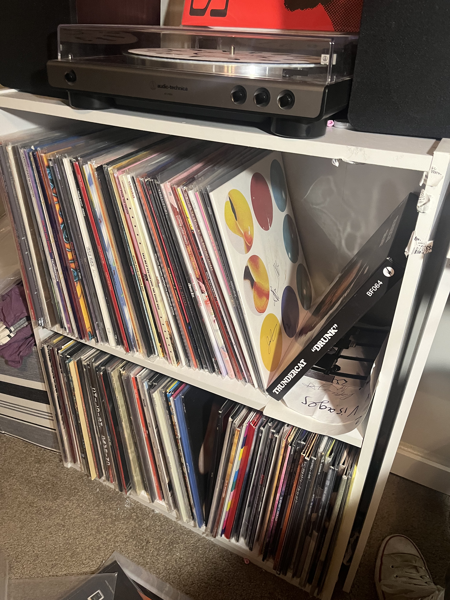
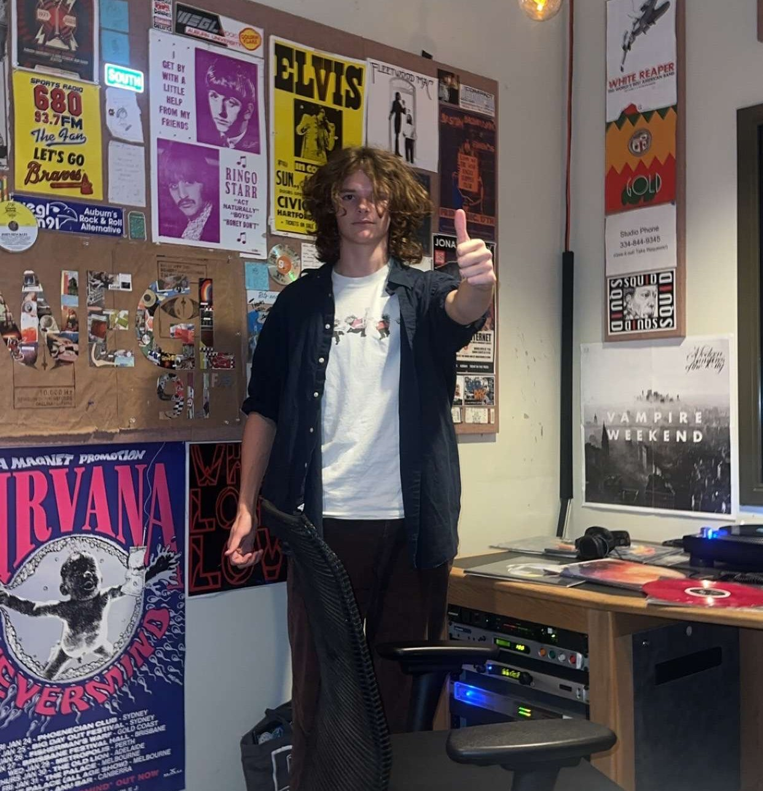
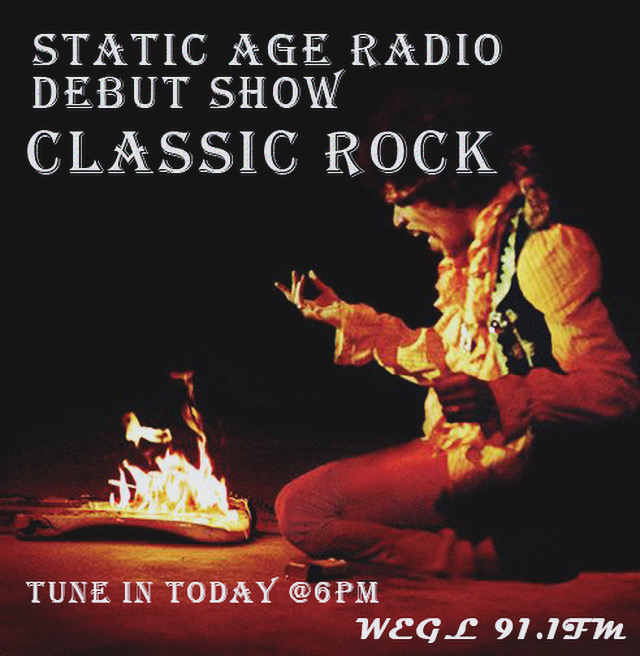
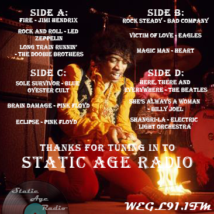
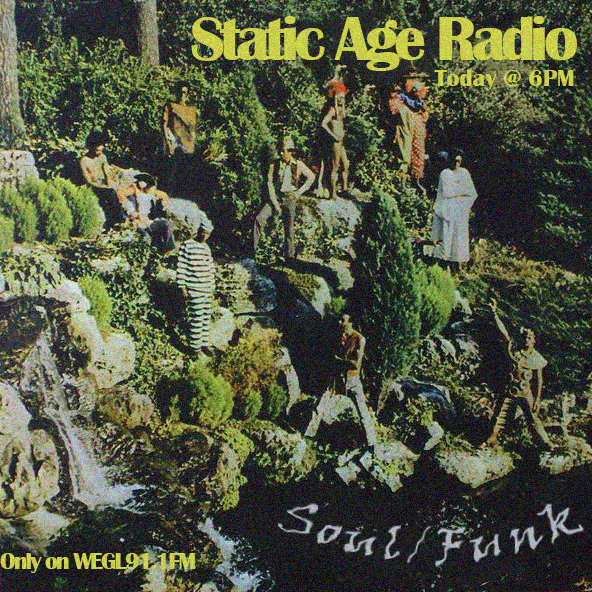
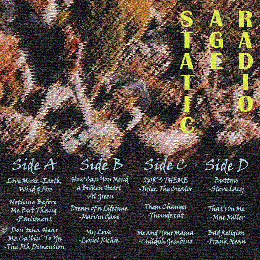
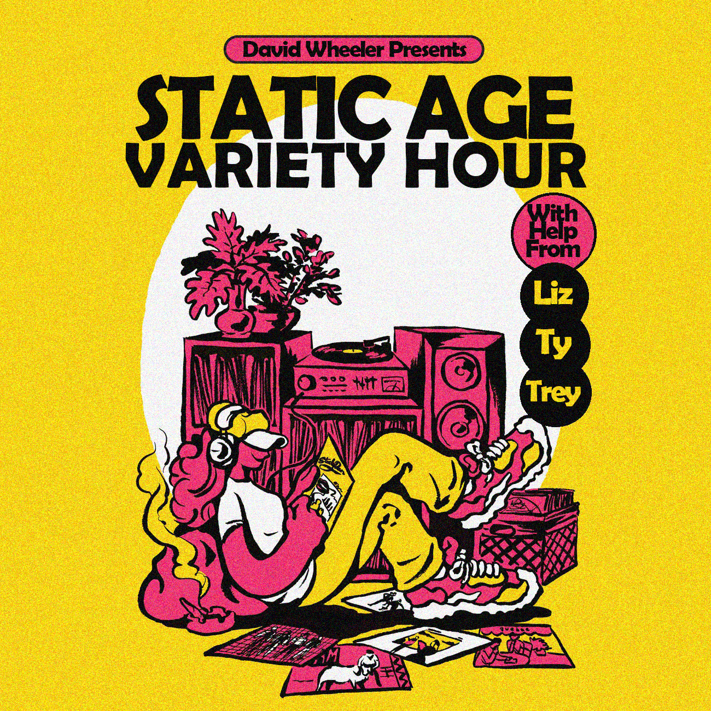
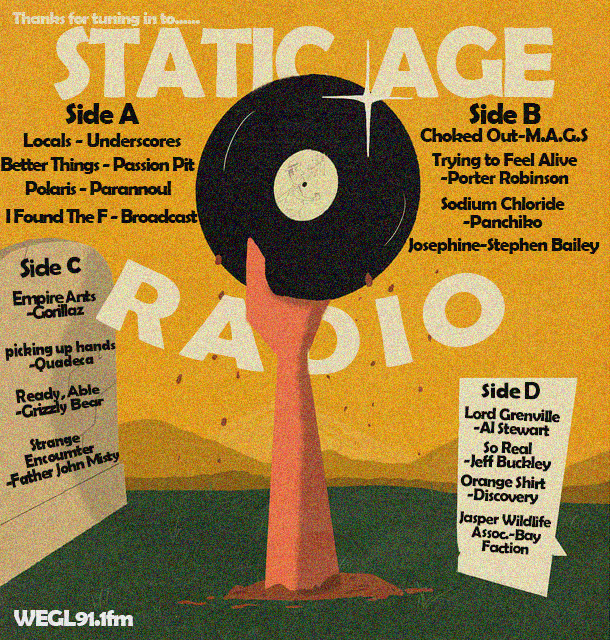
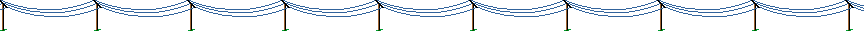

The Show
Static Age Radio
Static Age Radio Operated From May of 2024 through August of 2024. Static Age hit the airwaves every wednesday at 6:00 PM with its first show premiering on May 15th, 2024 and its finally airing on August 16th, 2024. This show was incredibly enriching and helped me in so many ways. From helping me create/maintain a schedule, to multitasking, to dealing with a radio format I hadn't before, this show helped shape both my physical and mental health in a positive way.
The Idea

The idea for Static Age Radio came from a few places. First, there was the gradual growth of my record collection which I frequently updated (too much tbh). Second, there were a few friends in radio who used records either mostly or entirely on their show. And thirdly was the time constraint. This show was just going to last the summer so I didn't need to worry about whether I'd run out of usable records for it. With those three factors all circling my brain at once, I decided to commit fully to a fully analog show.
The Host

Static Age Radio was hosted by David Wheeler (me) although I featured a multitude of guests on certain episodes throughout its run. To me these shows are the ones I go back to the most often. Personally, there is such an infectious joy in hearing myself banter with my friends about music we like. If you're looking to check out any of the episodes, I'd recommend starting with any of the variety hour specials.
The Timeline
Week 1 (05/15/2024): Classic Rock & Technical Difficulties
The first episode of Static Age Radio kicked off with some classic rock. Embracing this new analog format made this decision feel right along with the fact that Analog Static also began on a classic rock theme. The episode itself was a bit of a mess in all honesty. I had never really used the turntables before and was not prepared at all for the weird settings that the turntables were set to when I arrived. Many of the tracks in this first episode feature strange effects and pretty bad mixing because, again, I did not know what I was doing. The first song, Fire by Jimi Hendrix is genuinely comical when I try to play it. When it plays, its far too quiet and you can hear me fiddling around with the record player's settings basically just pressing stuff til it works. There's even a moment where the sound gets a bit better but not even a full 5 seconds later I mess it up and it goes quiet again. It proved to be an incredibly stressful and hectic show that caught me a little off guard but I ended up learning a great deal from just this first show. Regardless of the difficulties and stress, this debut still proved to be a fun show. What helped was having my friend Ty in the studio to provide company and moral support while the show progressed. Ty would be back two shows later for the first variety special.


Week 2 (05/22/2024): Soul, Funk, and R&B
With the first episode tackling classic rock, I felt the second show should gradually ease into the modern age. My way of doing this was to play some older soul/funk in the first two blocks, and have the second two blocks contain newer soul/funk as well as some newer R&B. It was super fun mentally comparing these two halves of the show and how the trajectory of soul music has shifted and where it has remained consistent. Also fun fact about this week was I was short one song for the oldies and so I went to my local record store and purchased Let's Stay Together by Al Green, I hadn't actually heard it before (I know, I know) but knew it was a classic so I trusted I'd find something I enjoyed from it. Well, I went home and played it, and absolutely loved it. It was actually hard to pick a song from it because I enjoyed the whole album so much but ended up landing on the title track because, ya know, classic. Luckily I faced far fewer technical difficulties this time and was slowly acquainting myself more and more with the technology I was using. I still feel like my delivery in these first two shows was pretty awkward and stilted so its pretty obvious that I hadn't gotten completely comfortable with the format yet. Fortunately for me, this would change drastically in the next show.


Week 3 (05/29/2024): Variety Hour Special #1 With Liz H, Trey, & Ty
This was the first variety hour special of the show. Variety hour specials were an idea I had to, every few shows, have three friends on the show and have them each pick a few records to bring and showcase. Not only did this provide a really nice diversity to the catalog of music that was played, but it also gave me a much deeper insight into each person I brought on the show. It was so fun having each friend explain which records they picked and why they chose the specific song they did. Overall this was the first show where I had a really good time and felt relaxed/comfortable on air pretty much the whole time. This also proved to be a great learning experience too because two out of the three guests this episode had radio shows of their own and were more experienced than I was so it was neat picking up on mannerisms or habits they displayed while on air. I've mentioned before that my favorites of the shows I've recorded were the variety hour specials and this one set the tone for the future ones, having me planning/anticipating the next special from the moment this one ended. It's no secret that, on air, it took a while for me to find my footing when talking in between songs because I was so used to having a co-host. This resulted in a lot of my dialogue in solo shows coming across a little stilted and flat. But with this one, talking to all of my friends about all of the music we were playing felt so natural and seamless.


The Archive
Week 1: Classic Rock - 05/15/2024

Week 2: Soul/Funk/R&B - 05/22/2024
Week 3: Variety Hour #1 With Trey, Liz H., and Ty - 05/29/2024
Week 4: Summer Music - 06/05/2024
Week 5: Emo Music - 06/14/2024
Week 6: Variety Hour # 2 with Emily, Ryan, and Liz F.(Was Jimmy) - 06/18/2024
Week 7: Jazz with Logan - 07/03/2024
Week 8: Sleepytime Music - 07/03/2024
Week 9: Country/Folk - 07/10/2024
Week 10: Variety Hour #3 - 07/17/2024
Week 11: LOUD MUSIC - 07/25/2024
Week 12: Soul-Crushing Music - 07/31/2024
Week 13: Variety Hour #4 With Chloe, Caroline, & Liz S. - 08/07/2024
This show was not recorded. #lostmedia
Week 14: Static Age Radio Finale with Troy, Evan, & Wyatt - 08/14/2024
This show was not recorded. #lostmedia